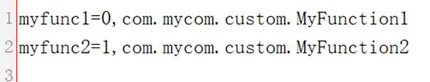

This item lets you configure a special file in order to use a user-defined function written for achieving a specific purpose. After registering the user-define function, you can directly use it in an SPL script as you use any other built-in functions.
The user-defined function configuration file is customFunction.properties, whose format is shown below:

In this file, each line is a function definition, where the part on the left of the equals sign is the function name, which is unique across the whole function system; namesake functions (including user-defined functions) are forbidden. We split the part on the right of the equals sign into two parts according to the comma. The first has a value of 0 or 1; 0 represents a regular function and 0 denotes an object’s member function, such as s.len(), which is the string object function. The second is the complete Java class name for the user-defined function.
Learn more about user-defined functions in SPL User-defined Functions.